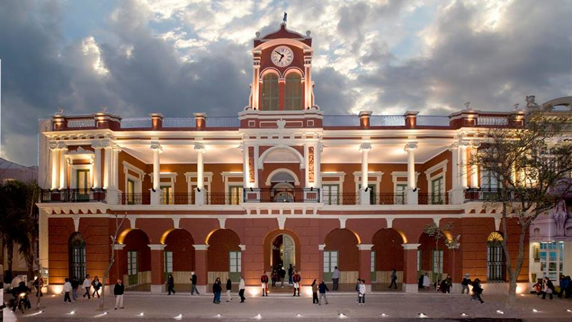
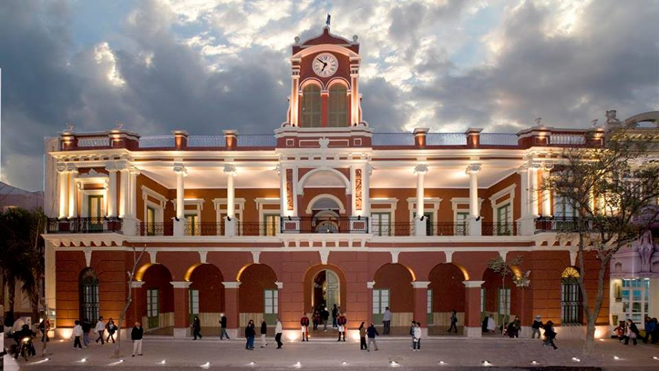

Salta es una provincia ubicada en el noroeste de Argentina. Limita al norte con la provincia de Jujuy, al este con las provincias de Chaco y Santiago del Estero, al sur con la provincia de Tucumán, y al oeste con Chile. se encuentra atravesada por el río Juramento y rodeada de montañas que forman parte de la cordillera de los Andes. Se pueden encontrar diversos valles y quebradas, como el famoso Valle de Lerma y la Quebrada de Cafayate. tiene un clima subtropical de montaña, con estaciones bien definidas. Los inviernos suelen ser fríos y secos, con temperaturas que pueden descender por debajo de los 0°C. Los veranos, por su parte, son calurosos y húmedos, con temperaturas que superan los 30°C. En general, la provincia tiene un clima agradable la mayor parte del año. Salta cuenta con numerosos atractivos turísticos: Parque Nacional El Rey: Ubicado en la región de la Puna, este parque ofrece un paisaje desértico de montañas, llanuras y salares. También es un lugar ideal para la observación de aves.


 
